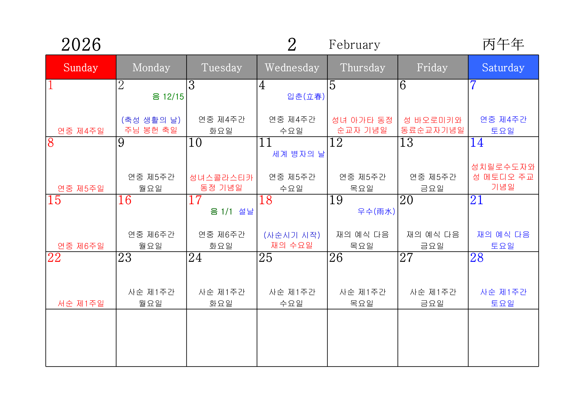

그리스도교 일치를 위한 기도
○
주 예수 그리스도님,
주님께서는 돌아가시기 전날 밤에
아버지께 기도하신 대로
주님과 아버지께서 하나이시듯
주님을 믿는 모든 이가 하나 되기를 바라셨나이다.
●
저희는 같은 믿음으로 세례를 받고
같은 주님을 모시면서도
서로 갈라져
주님의 뜻을 이루지 못하고 있나이다.
○
이제 저희는
한마음으로 기도하며
하나가 되고자 하오니
●
저희를 도와주시어
미움과 불신을 버리고
진리 안에서 서로 사랑하며
하나의 공동체를 이루게 하소서.
◎
아멘.
분과별 주요 진행사항 공유
신부님 전달사항
마침기도(영광송)
